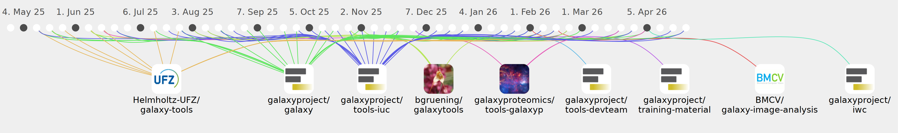

bernt-matthias

Commits all-time: 4019
Commits last year: 732

(248)
- 3c28734
- b0232da
- 212acf3
- 7e0b77c
- 6da7809
- c74f066
- 8d76027
- 1168d9b
- e4993e6
- dc8275c
- ef225c4
- 12f69be
- 07bf0d6
- b4ae0a4
- a474793
- a512dae
- 584464e
- 0bb8c72
- 62adedb
- 555fe5f
- e725f42
- c3e93ce
- 0f19774
- 181d5d2
- f91e9be
- 974bde5
- d44e3d4
- ccced2f
- 3a98a3a
- e1457c8
- 5ab68e3
- f9a7324
- 9c28fba
- 7c3e2a6
- 2b4ac45
- c37a4aa
- 7530fb4
- deca7e6
- 6246d6b
- fcb6fd2
- 0dc23a6
- e5ff242
- 6b52d6d
- bc01638
- 24950a7
- 2428b9d
- 2395e65
- 46ff3f2
- 368f3e8
- ed8eb6e
- a0b25b5
- 101a8a9
- 80c7cc2
- f6d9ca9
- 38e60d6
- c1bb7b5
- 840ebe0
- c1091c1
- 433585d
- aefbdab
- 45e671c
- cd89ab1
- 911df49
- f198184
- 09a5732
- 73708f9
- 22f5073
- c3ff775
- 0790854
- 566731b
- cb79e87
- 9920e0a
- b2cd4c9
- 450c937
- b5772d8
- db2f548
- de34121
- f15426c
- a1bfbf5
- c6c34f4
- eb61d68
- 3065b36
- 08f2124
- 99e088a
- c964d89
- e5a56ad
- 2a7cce0
- df7c2af
- e76f5ff
- 9a17a04
- 5a48f66
- 4e1a6d3
- 082d465
- 4003cb4
- c51eda6
- 3dae54a
- 5a03b37
- e0e6a6e
- 117120c
- ed69e0f
- a44c548
- b05bfc3
- 0b082d2
- e0fee40
- ae594c1
- e1ec2c8
- 1a545ae
- 8612c35
- af612e9
- 4603168
- 8045855
- 4ffec5a
- cfbd8ed
- 07aa429
- f57b68c
- 1d945bf
- 55c5d08
- 74b19f0
- 1f2c86d
- d4618c2
- c026305
- 6f044a1
- 2bfb731
- c201daa
- 1f9a2fa
- c052463
- 0f5bbc0
- 089cc1f
- 6453707
- f29601a
- 8938b02
- 654c702
- a2fa98d
- a2d1a5d
- 5297fa3
- d006411
- d947481
- ba5e53b
- 9d601f8
- 213ff26
- df044c4
- 95df247
- a74517e
- d793491
- cf20090
- 1ff21ee
- 91ca899
- 2c99d0e
- b9791d8
- 1e9ed3a
- c8ec6ae
- 870a433
- 3b2f842
- 2dcee34
- c74194c
- 3b3a65d
- 8b8791a
- bc8d646
- 001faf7
- 85d4b42
- 7b09725
- eeab749
- 3cdbb8f
- 8310bf2
- 262b4b6
- 4e81a78
- 8bf7c8b
- 9c9b52d
- b71b6ef
- 14f382e
- c15417c
- 5d97ed5
- 5895a57
- a850008
- b99e3c8
- 57b3666
- b44d49b
- 0ed4b48
- 1d9a611
- fc9d2f1
- 701f6ab
- faf4b1b
- 04abcd5
- b34611f
- a788fbd
- c80ce1d
- 7dd606a
- e4e451d
- 6ae000d
- bba7cff
- 753898e
- 8fd56f3
- 661dd2a
- 56fae9b
- f8478d7
- bafd666
- c4aba56
- be3c547
- 3b70256
- 16e7cdf
- 967db5b
- e8a612b
- a664638
- 436e8e4
- 71f5048
- 1705652
- 3d66d5f
- 84cc2cc
- bc161f5
- 2d7cd6f
- e09cba3
- 536f2cf
- cde25ed
- e06a45d
- 94d1390
- 50fcbf6
- 66e85f4
- 5ec3732
- da7926a
- f2c105d
- d206795
- 9e759bb
- bfd895a
- 78a8f91
- c595c0e
- 001c1dd
- ba5c2cf
- b926ca0
- 8d49b1b
- e851a45
- edddce7
- 887b1aa
- 174f244
- f900689
- ff0530c
- 157d074
- 2676039
- 228e62d
- 158b29c
- 6e17d94
- 2d4d883
- a09ece8
- 41344cd
- ea724bf
- f2100cc
- 77434f2
- db1b370
- 62ae16e
(230)
- 4028432
- 80df573
- 23dd222
- 099aca0
- 4c55ba9
- 242dbd9
- 1947881
- f4ec298
- b3f3fa7
- d7a95db
- 0c4d930
- 2fe96b5
- 24acfd0
- 3da34ac
- 0d01923
- dbfae66
- 08cf4b3
- cdb3c8e
- 6aa6498
- 4a08ca0
- 13428a0
- 2b52e18
- 2a406f3
- fc57dbb
- 68d7365
- 09b56ef
- 0443b41
- b04f638
- d152cca
- 6dc90b0
- d8c2484
- 0830307
- c1cd9b7
- d8dea5f
- 5d7433e
- 32a3d8a
- 04cc2c1
- 4e3af02
- 7536270
- 7758d22
- d9798cc
- b5f4f8b
- 069bfd6
- 4f913b2
- 1a763e3
- 6e2326a
- 64490a6
- 97a5977
- c652a45
- 38a40ea
- c3f50b6
- 5fae7aa
- b49f280
- 11fc4e4
- 823aa8a
- 01fd7b5
- 2a5e25b
- 85d61d3
- 090e436
- e562c0d
- 6f3f3ed
- 09424f6
- 85c7cba
- a549cd3
- a1dfbb9
- 1958263
- ef9a3da
- 1d05793
- b1eb771
- 250112d
- 1225279
- ce7e092
- 3cfed29
- 58aa3a1
- e4ee020
- fe7c6bb
- db77815
- 97a4266
- daf7e41
- 5ec9f9e
- ab75ba7
- 9bf18db
- 00e6389
- 96e2268
- d7dae43
- aca8602
- 133e375
- 628745a
- dd1b0b7
- beaa388
- a3f57ea
- f53f7f2
- ac11ea7
- db30370
- 431ba94
- a95f5b0
- b509850
- 921fa90
- 1e2ca15
- 7c23f32
- 5f3f8c7
- 103f320
- 9bbc089
- d1a5cff
- e54c647
- ea1cf75
- fb1e5bd
- f9acc7c
- 812bb0a
- fff23da
- 12ca5da
- 3c1a0c4
- 9882d51
- cd51396
- 02d2f93
- 4c42bab
- a1dbb0a
- 9fdd0f5
- e6103ab
- 2335dfc
- 535e6c8
- 2e2ee14
- 5452174
- b2ec8a6
- b9e0653
- 28e03d0
- 41d7b5d
- 0cd12a5
- 9e73728
- 4fd3aed
- e745785
- 57b2635
- e8ac361
- 71e1b99
- 663c06f
- fd42353
- 8fda22d
- b6d2930
- 6ad64a1
- 6dcaf0c
- cdebf2a
- fd0ed2a
- 8c87122
- 5d732ab
- d15a515
- 7d29653
- 567c48b
- a5327fe
- d126492
- 59a7747
- 7d70738
- b61e1c8
- 57a7f21
- 58a1d4b
- 87e0986
- ab6d071
- f28d66c
- 4474706
- 8ee7bc7
- e18a50f
- 3e16c5c
- 5fbd038
- 9b7657d
- 96c2ecc
- ec8476a
- 238d099
- 9e4e8cf
- 6c59f5f
- de4759a
- 418c096
- c1b3c8d
- 8e8c67f
- a3535e4
- 24ee19a
- 68efb75
- a6a6774
- 1beb51c
- 412a084
- c0e36b1
- c663513
- bb5df9e
- 851b88d
- f9cc878
- d1a0b97
- b571b1d
- b5c87db
- a70aaa1
- 746b1db
- c6240a9
- 92d7571
- c5df38f
- 1536ccd
- 908be05
- 5f695d7
- 28ff4ea
- 27598da
- 32833cd
- 664bb37
- 10f99ef
- 62d2149
- ff71f88
- 9b025e6
- 04cc678
- c54d1c1
- c27809c
- ef6ae9a
- 3e9f389
- 695feca
- 652fbb9
- af59f06
- 466e27d
- 7d75d46
- e21a174
- 4999315
- 418a2db
- b55cfca
- ca9be42
- 1b0b5c7
- 1221a5d
- ff1576c
- 9be97b7
- b989843
- 2594c07
- c02dfbb
- 46992fb
- db8c73b
- 68f37fd
- 57fa9bf
- 086dfdd
- b46629f
(122)
- 5b9ce7c
- b0109e7
- ee44a78
- 0888125
- 42a69e0
- 7ec2f62
- 8e8ea39
- f2241e2
- d2a440e
- be5d769
- baf140f
- 438b9a1
- ff538c3
- 467e934
- fcf22d2
- d65a1eb
- 0358f8c
- 6a16e8b
- f058896
- 270b7eb
- 2dcbfad
- a267cf2
- e12c08a
- 91c7976
- 1b04441
- ebf948c
- b9aa7d7
- 2b74804
- cd331b7
- 38fbf88
- fcc6630
- 4083b5d
- 659c1b0
- 4aa3199
- f241f15
- 80704e0
- 51a4b57
- 8f074e1
- 008f820
- 86477b0
- ec68159
- e409f80
- ceaed0c
- 6b171bc
- 4273492
- 733c6c2
- 88861b3
- 4dc182c
- 6ab2cae
- 3aebdcc
- 103edad
- 7195430
- 0770bed
- 16d408d
- 592bb3f
- f5626ce
- 448c781
- 483ade5
- e8ab18e
- 0748c43
- 33810fc
- ed68470
- dd82b08
- 8d03659
- 0266917
- 296c966
- ce0f5d7
- edfaa04
- ff80d4f
- 0d3034a
- 5d1033c
- e832794
- 0fe498e
- 0d3db84
- 95981eb
- d0c183f
- 302e245
- fa9b7ab
- 1818676
- fdde667
- a162327
- c83de49
- 2b6f4ed
- 289eb8f
- 4ad36d1
- 284b1c8
- a8dc612
- c0c9643
- bf77ca1
- 5497619
- 98b907b
- b9d952c
- 3fbe17d
- 5d1fe5b
- 5b1b30d
- a86e6a3
- ac7cd09
- 266752b
- 59ac87f
- 028805f
- 4f75c56
- 8489a0e
- 5d0e3a7
- 89a6815
- becabe0
- 5214168
- 652d6d2
- 2c5c3fd
- 625d1e8
- 89a862b
- 372efec
- 2050896
- d911f12
- c7f77b8
- 6af6386
- dddf8b4
- 2dca03f
- dca5f94
- d99e4d2
- 129359f
- 3c8e23e
- c78bd5e
(57)
- f6c5a2c
- 9cd6d2c
- c12f9c5
- 18bef05
- 0307855
- 6fbeccd
- f0ad949
- b4538ca
- 3b46ad5
- df10151
- da2d918
- 07973a2
- 98a8220
- a56ab53
- 6071024
- aac5c62
- 825f2f5
- 2fba17b
- 72a15d2
- eeb2931
- 93a3b1a
- 3212bcb
- 8ed75ad
- 9d107cb
- 84f18bc
- be23b50
- ff3d1df
- 43854f1
- 167f0c4
- 77e64c1
- 375c95e
- 133bd45
- 32291f4
- a11ed83
- c5febd3
- 1146cf2
- e4cdec0
- 6b0b3a7
- 203cabe
- c681fc2
- 0b0e12c
- 7daca41
- 8d0d553
- b40d918
- b77ab5f
- 841af53
- 30ef4f0
- aa96823
- 631267d
- 63edeb9
- 0914c96
- 6027fef
- 9059c8e
- b0464cd
- 542ee0c
- f387426
- 6e9f186
(43)
- c490657
- c7e79c0
- 9b95239
- 9dda0bb
- 8803952
- bcdb208
- 12f56c7
- 4f220ef
- 9c1fee5
- b8e8aed
- 8f71324
- d2e104d
- 85c24fc
- 4adc616
- 438ae05
- 480f8d8
- 30c9b59
- af62dad
- 27719a2
- 7ea1187
- 36a8add
- 5971f8f
- a8b5d03
- 8ebeb15
- 5d05d3b
- 194bcde
- 7f5ec3b
- 42cf488
- 0dfb2f8
- 1e4a1d6
- f272f26
- 9c0edb2
- 217ad3e
- d1be6e4
- d2e82a6
- 22b0a33
- 0a616d8
- 1c32e81
- 39d6e0d
- 1253e81
- fdf6184
- fd81607
- 7f091ab
(14)
(13)
(4)
(1)